| 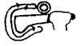 |
1. "Sticky Bat"
Roll the puck around the bat without the puck leaving the bat's surface. |
| 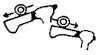 |
2. "Feinting Roll"
Roll puck backwards and forwards along playing edge. The manoevering comes from the wrist, thus making the puck do the moving/rolling. |
|
3. "Dribble"
Set the dots in a line on the bottom of pool about 30cm apart and dribble (feint) through them. Optimum distance would be 20cm when one gets good. |
| 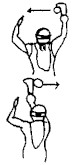 |
4. "Right/Left Juggle"
Always start SLOW and then do it FASTER and FASTER and ...
(1) Juggle the puck from right to left while lying on one spot.
(2) Juggle the puck from right to left while swimming forward.
(3) Juggle faster and swim faster
* Keep the puck in front of you... don't move it to the side of (next to) the body.
* Concentrate on rolling the puck off the bat ... if the puck spins you are doing well.
* Keep the movement a smooth one.
|
| 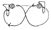 |
5. "Right/Left Juggle"
* Quicken the pace
* Close your eyes
* Try to make sweeping figure-8 movements and you will always find the puck.
* It is very important to learn to control the puck.
* FEEL the weight of the puck. |
| 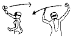 |
6. "Right/Left Reach Juggle"
Again keep the puck in front of the body and FLICK the puck from side to side while rolling your body.
* Use the back side of the stick
* Use your free arm for manoverability and stability. |
| 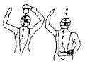 |
7. "Flick under chest/forward"
Progress from slow smooth movements to faster smooth movements.
* First do it lying on the bottom
* then faster stick movements
* then slow stick with slow swimming
* fast stick & fast swimming |
| 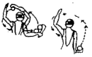 |
9. "Hook round under body"
You should be able to place the puck where you want to
i.e. R-of-hip/waist/shoulder etc.
Loop is back up in front of you. Pull hard. If you hook too sharply with your bat in the correct position you will still be able to complete the manoever.
|
| 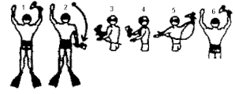 |
10. "The Robyn/Picoli skill"
While swimming foward (fast; #1) and not looking at the puck (feel the weight) ... drop the puck back to R-of-hip/waist (#2) and swim with the puck in that position (feel the weight) ... whip it through under the body from R-L (#3) and then immediately back to the right again (#4-#5-#6) and swimming forward (fast; #1 & #6).
|
| 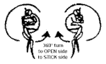 |
11. "Curl turning with puck"
Simply turn 360 with the puck to the RIGHT and 360 with the puck to the LEFT.
PROGRESS to:
* Mirror curls (copy another persons movements)
* Stop in the middle of the movement and go back the other way.
|
| 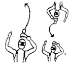 |
12. "Flicking"
Practise ... practise ... practise ...
Flick into goals ... Flick over goals ... Flick into bucket ... Flick for accuracy (at another puck) ... Turn and flick ... Swim and flick and follow ... Flick while stationary ... Bat flick (from an opponent) down!
|
| 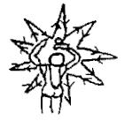 |
13. "Advanced Skill"
* Move puck around in a STAR-shape while you turn clockwise with it - foward/back.
* Move puck around in a STAR-shape while facing foward all the time.
|
| 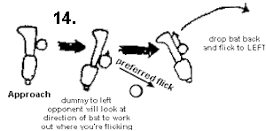 |
15. "Positioning"
This is something really learnt while playing in a team. TWO elements are however very important:
1. Playng and keeping your position relative to the team
2. Advancing the puck ... swim into "gaps" of the opposition team in attack and in defence close the "gaps" in your team so that the opposition cannot get into them.
You will have to recognise those "gaps" in play.
|
| 16. "The puck is yours ... Play with it"
This is a One-on-One situation where you have the puck. Try not to give it away to anyone. This required BREATHOLD and lots of TWISTING and TURNING ... always in contol and keep sticking your REAR-END in our opponents face.
|